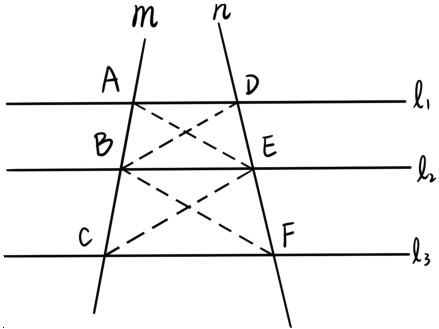
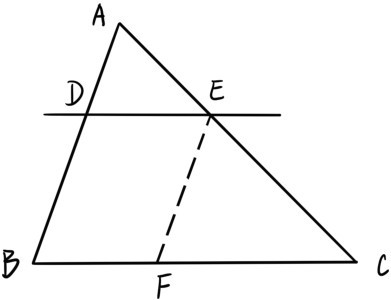
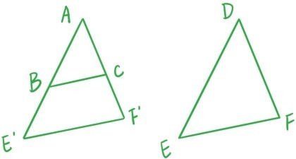
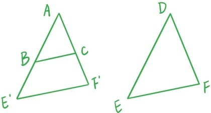
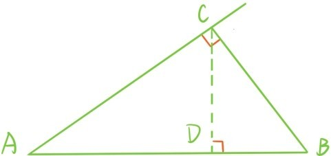
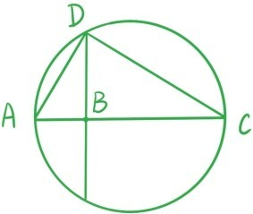
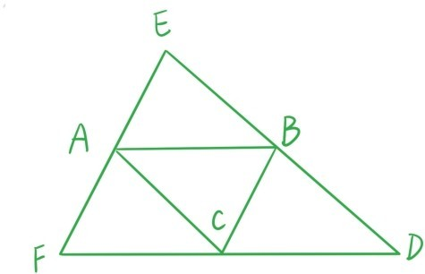

定理6.1（平行线分线段成比例定理）如下图所示，3条平行线l1，l2，l3与直线m的交点分别是A，B，C，与直线n的交点分别是D，E，F，则

证明：记以A，B，E为顶点的三角形面积为S。因为△ABE与△BCE过点E的高是相同的，所以根据三角形面积公式，，同理，。根据定理4.4，点A与点D到直线l2的距离相等，所以S=S，同理，S=S。结合这4个等式直接推出（证毕）。
△ABE△ABE△DBE△BCE△BFE
若∠A，∠B，∠C分别等于∠D，∠E，∠F，且相对应的边长比值相等，即，我们称两个三角形△ABC和△DEF是相似的，记作△ABC∽△DEF。两个三角形相似意味着它们的形状是完全相同的，只是大小可能不一样。两个全等的三角形自然是相似的。
定理6.2 若直线DE与△ABC的边BC平行，且分别与边AB，AC交于点D，E，则△ABC∽△ADE。

证明：根据公理4，这两个三角形对应的角都相等。根据定理6.1，。过点E作直线AB的平行线，交BC于点F。因为四边形BDEF是平行四边形，根据定理4.2，DE=BF。最后根据定理6.1，。所以△ABC∽△ADE（证毕）。
和判定三角形全等类似，判断三角形相似也有3种方法。
定理6.3 若∠A=∠D，且，则△ABC∽△DEF。

证明：在边AB或它的延长线上取点E'使得AE'=DE，过点E'作BC的平行线交边AC或它的延长线于点F'。根据定理6.2，，联合假设，可以推出AF'=DF。根据边角边定理，△AE'F'≌△DEF，而根据定理6.2，△ABC∽△AE'F'，所以△ABC∽△DEF（证毕）。
定理6.4 点D和点E分别是△ABC的边AB和AC上的点，则当且仅当BC与DE平行。
证明：（⇐）若BC与DE平行，根据定理6.1，。
（⇒）若，根据定理6.3，△ABC∽△ADE，所以∠ADE=∠B。再根据定理2.3，BC与DE平行（证毕）。
定理6.5 若∠A=∠D，∠B=∠E，则△ABC∽△DEF。

证明：在边AB或它的延长线上取点E'使得AE'=DE，过点E'作BC的平行线交边AC或它的延长线于点F'。根据公理4，∠AE'F'=∠ABC=∠E。根据角边角定理，△AE'F'≌△DEF，而根据定理6.2，△ABC∼△AE'F'，所以△ABC∼△DEF（证毕）。
用类似的方法，可以证明判断三角形相似的第三个定理，直接给出定理，把证明细节留给读者做练习：
定理6.6 若，则△ABC∼△DEF。
定理6.7 （勾股定理）若△ABC是直角三角形，斜边为AB，则AB2=AC2+BC2。

证明：过点C作斜边AB的垂线，垂足为D。根据定理6.5，△ABC∽△ACD，因此，即AC2=AB·AD。同理可得BC2=AB·BD，两个等式相加得到AB2=AC2+BC2（证毕）。

现在可以给出第三章问题47的一个几何解释了。如上图所示，在一条直线上取线段AB=1，BC=x。以AC为直径的圆与过点B的垂线交于点D。根据定理5.6，∠ADC=90°。因此∠A=90°-∠ADB=∠BDC。根据定理6.5，△ABD∽△DBC，因此。令BD=y，则y2=x，所以y正是x算术平方根。
定理6.8 △ABC的三条高相交于一点。

证明：过点A作BC的平行线，过点B作AC的平行线，过点C作AB的平行线，3条平行线构成△DEF。根据定理4.2，AB=CD=FC，因此点C是DF的中点，同理，点A是EF的中点，点B是DE的中点。所以△ABC的3条高分别是△DEF3条边的垂直平分线。根据定理3.7，△ABC的3条高相交于一点（证毕）。
提问时间
证明下面3个定理：
定理6.9 若∠BAC内部的一个点D到两边的距离相等，则它一定会落在角平分线上。
定理6.10 三角形3个内角的角平分线相交于一点。
定理6.11 平行四边形两条对角线的平方和等于4条边的平方和。（提示：画出一条边的高，对3个直角三角形应用勾股定理）